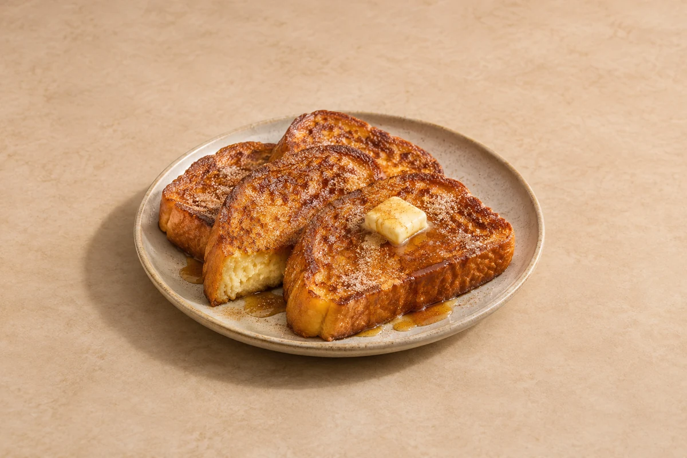

Breakfast & Brunch
Brioche French Toast with Cinnamon Sugar & Maple Butter
Golden and crisp outside, soft inside. Thick brioche French toast with cinnamon sugar and melting maple butter. Serves 2.
Prep10 mins
Cook15 mins
people
Ingredient quantities update automatically

Ingredients
French toast
Cinnamon sugar
Maple butter
Method
Prepare the brioche
Slightly stale bread works best. If yours is fresh, place the slices on a rack in a 140°C / 120°C fan oven for 10–15 minutes to dry the surface without browning. Let cool.Make the maple butter
Beat the softened butter with the maple syrup and small pinch of salt. Set aside. Mix the caster sugar and cinnamon for the cinnamon sugar in a separate bowl.Mix the eggs and vanilla
Whisk the eggs, milk, cream, vanilla, cinnamon and pinch of salt in a shallow dish until completely combined.Dip the bread
Dip the brioche into the egg and vanilla mixture for roughly 20–30 seconds per side. Let it soak while staying firm enough to lift, then allow any excess to drip off.Fry gently
Heat half the frying butter and oil in a large non-stick pan over a medium-low heat. Add a batch of brioche slices and cook for 3–4 minutes per side until deeply golden and the egg mixture has set through the bread. Repeat with the remaining butter, oil and bread, wiping the pan if the butter darkens. Work in batches when increasing servings.Finish and serve
Sprinkle both sides lightly with cinnamon sugar while hot. Divide between plates and serve immediately with the maple butter melting over the toast.